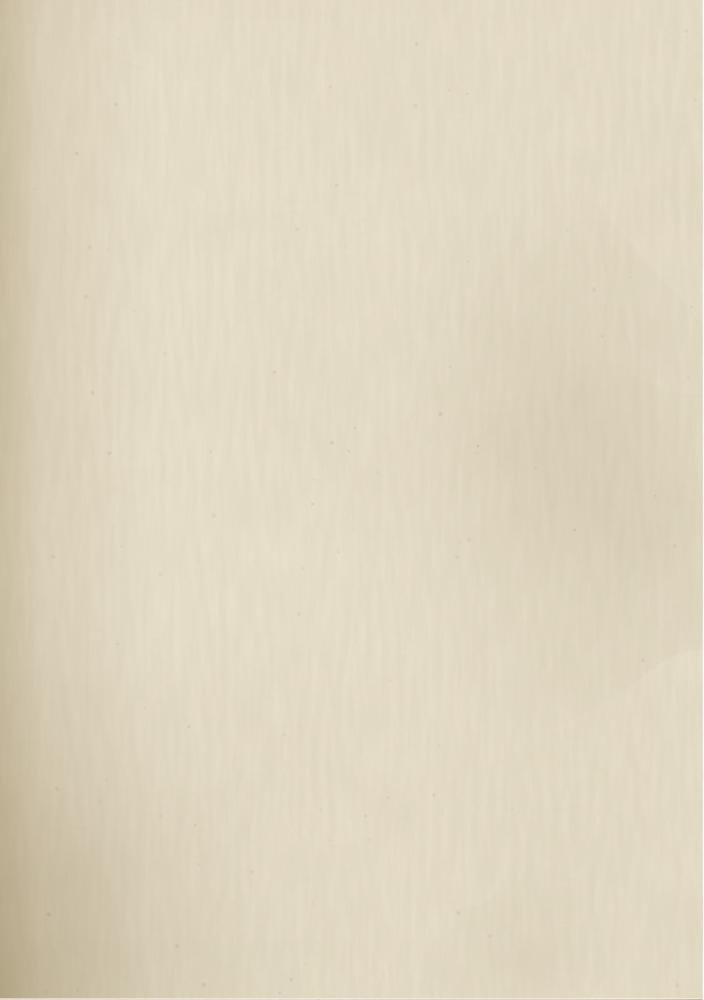
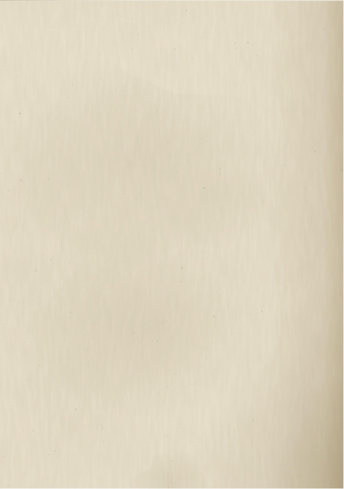

暁の砕き手
DAWNBREAKER
ブラの手記
暁の砕き手
DAWNBREAKER
ブラの手記
ハイフロスガー蔵書
受入番号 七二—一一
年代不詳
暁の砕き手
ある一党に同行した者の記録
記 ブラ
わたしは物書きだ。戦いには向かない。だから見ていた。
見ていたことだけを書く。
その人が何を考えていたかは書かない。わたしは知らないからだ。
この手記は誰かに読ませるために書いたものではない。写しも取っていない。ただ、数えている者が一人もいなくなるのは、あんまりだと思った。それだけの理由で、わたしは筆を執っている。
オークの物書きというのは、たいてい笑われる。斧を持てと言われる。わたしは持たなかった。持たなかったから、こうして残せている。父には悪いが、わたしはこの職を恥じていない。
ひとつだけ、はじめに断っておく。この手記には、順序どおりでない箇所がある。書いた時期と、起きた時期が合っていない。
わたしが怠けたのではない。あとから聞かされて、はじめて書けるようになったことがあるからだ。そういう箇所は、あとから隙間に押し込んである。字が詰まっていたら、そこがそうだと思ってほしい。
——ブラ
肖像は描かない。描けば、そのとおりの顔になってしまう。
＊＊＊＊首を刎ねられる寸前で、死にそこなった。以後、死ぬたびに戻ってくる。あと何度戻れるのかは、本人も知らない。
メリディア光と生命の女神。アンデッドを憎む。その人を選び、炎の剣を与えた。「アンデッドを滅ぼせ。自らアンデッドになるな」——契約はこれだけだった。多いとは思わない。ただ、逃げ道もない。
ホス賞金稼ぎ。自分の首にも賞金がかかっている。裁く資格のない男が、それでも裁く。金の勘定だけは正確だ。
イニゴ人を殺した青い猫。牢の中で拾われた。よく喋る。喋っていないときは、たいてい何かを悔いている。
アウリ森の狩人。この一党で、獣の言葉を解するのは彼女だけだ。人の言葉のほうを、ときどき面倒がる。

カイダン帝国に育てられ、帝国に追われた。恩と恨みが同じ相手に向いている。それを他人には説明しない。
ルシアン学者。剣が振れない。荒くれの中に一人だけ場違いな男が、なぜかいる。いなくなると、皆が落ち着かない。
ブラオークの物書き。この一党の記録者。つまり、わたしだ。
狼名はその人が付けた。子犬として現れ、共に育った。名は、ここには書かない。
この一覧は、はじめに書いた。いま読み返すと、欠けている名がある。書き足す気にはなれない。
一党と書いたが、正式にそう名乗ったことは一度もない。旗も、誓いも、名簿もない。
それぞれが別の理由で来て、別の理由で残った。共通していたのは、他に行くところがなかったという一点だけだ。
たしはその場にいなかった。だから、これは聞き書きだ。話してくれたのは三人いて、三人とも少しずつ違うことを言った。食い違った箇所は、そのまま残しておく。
処刑台があった。刃が上がった。
上がりきったところで、空が裂けた。影が落ち、火が降り、名簿を読み上げていた者は名簿ごと燃えた。
その人は歩いて出てきた。傷はなかったという。誰もそれを不思議だと言わなかった。あの日は、不思議なことが多すぎた。
わたしがその人に会ったのは、それから二年ほどあとだ。だから、この日のことを書く資格が、本当はわたしにはない。
それでも書くのは、あとになって思い当たったことがあるからだ。あの日から、その人には傷がつかなくなった。正確に言えば、傷はつく。ただ、翌朝には消えている。
三人の話が食い違ったのは、刃が落ちたかどうかだ。落ちたと言う者が一人、落ちる前に空が裂けたと言う者が二人。わたしは二人のほうを採った。多数だからではない。落ちたのなら、首がないはずだからだ。
もっとも、いまとなっては、それも当てにならない理屈だと思っている。
——一度目。
れ果てた神殿だった。柱は倒れ、床は苔で緑になっていた。屍を操る男がいた。名は書かない。書く価値がない。
わたしたちが着いたとき、そこは静かだった。静かというのは、音がないという意味ではない。何かが音を吸っていた。イニゴが尻尾を低くしたのを覚えている。あれが黙るのは珍しい。
光が降りてきて、声になった。
メリディア「わが光を、わが手に取り戻せ」
わたしはその声を聞いていない。聞いたのはその人だけだ。だが、そのとき神殿が明るくなったのは見た。あれは日の光ではなかった。日の光には影ができる。あの光には、影ができなかった。
炎の剣が、その人のものになった。わたしはそれを、授かったと書くべきか、負わされたと書くべきか、いまも決めかねている。
剣は軽いのだそうだ。ホスが一度だけ持たせてもらって、そう言った。軽すぎて、振ったあとに手が余る、と。
その夜、その人は剣を鞘に納めなかった。膝に置いたまま、火を見ていた。ルシアンが何か言いかけて、やめた。あの男が言葉を選び損ねるのは珍しい。
ここから、その人は道具になった。
やがて噂が届いた。太陽を永久に覆おうとする王がいる、と。
ハルコン。吸血鬼の主。「太陽の圧政」を終わらせようとする者。その人が最も憎むもの——永遠の夜。
その人は暁の護衛団に加わった。城砦は谷の奥にあって、着くまでに二日かかった。門をくぐるとき、カイダンが小さく舌を打ったのを覚えている。制服のある場所が、あの男は苦手だ。
じきに気づいた。騎士団はその人を必要としていたが、その人は騎士団に属していなかった。命令は下りてこない。行き先だけが渡される。
その人が率いていたのは、賞金首と殺人者と亡命者の寄せ集めだ。旗はない。誓いもない。給金もない。
それでも、誰も抜けなかった。わたしはそれを、しばらく美しいことだと思っていた。
いまは、少し違うふうに思っている。抜けなかったのではなく、抜けたあとに行く場所がなかっただけかもしれない。それは同じことのようで、同じではない。
護衛団には規則があった。朝の点呼、装備の記帳、聖印への礼。その人はどれも守った。守りながら、一度も自分のものにはしなかった。
イニゴが言うには、あれは借り物の服を着ている顔だ、とのことだった。ときどき、あの猫は驚くほどうまいことを言う。
ハルコンは死んだ。太陽は残った。
城砦に戻って、酒が出た。誰も勝ったという顔をしていなかった。アウリは早々に外へ出て、狼と一緒に星を見ていた。ああいうとき、あの二人はよく似ている。
祝いの席で、イニゴが数を訊いた。何度死んだのか、と。悪気はなかった。あれは悪気というものを持たない。
その人は指を折りかけて、途中でやめた。三本目か、四本目だったと思う。そのまま手を下ろして、盃に戻った。
ルシアンがすぐに別の話をはじめた。あの男は、そういうことだけは早い。
皆が寝たあと、わたしは頁を開いて、その日のことを書いた。何度死んだのか、という問いだけを書いて、答えは空けておいた。
その空きは、いまも埋まっていない。
そしてその人は、ここまでにもう何度も死んでいる。
死ぬたび、その人を殺した者は名を得る。装備を奪い、強くなって、どこかで待っている。取り返しに行かねばならない。だから、その人は必ず戻る。
これは呪いではない、とルシアンは言う。呪いには掛けた者がいる。これには、それがいない。
そして戻るたび、何かが欠ける。
最初は些細なものだった。宿の名前。道の順番。二度通った村を、はじめてだと言った。
次に、人の顔。ホスの顔を三日忘れていたことがある。名前は憶えていた。顔だけがなかった。ホスは何も言わなかった。あの男は、ああいうときだけ優しい。
欠けるのは記憶だけではない。癖も欠ける。左から先に靴を履く癖が、あるとき右になった。本人は気づいていなかった。
わたしは、そういうものまで書き留めるようになった。書いておけば、戻ったときに照らし合わせられる。照らし合わせてどうするのかは、決めていない。
そのあとに欠けたものは、ここには書かない。書いても、その人には読めない。
わたしは頁の隅に線を引いていた。一本が一度。
ある日、その人がそれを見て、何の印かと訊いた。
わたしは、書き損じだと答えた。
その人は頷いて、それきり訊かなかった。信じたのか、信じないことにしたのかは、わからない。わたしは、わからないことは書かないと決めている。
一度だけ、正直に言おうとしたことがある。頁を開いて、これは死んだ回数だと言いかけた。
その人は先に立ち上がって、水を汲みに行った。それきり機会がなかった。機会は、たぶん、こちらが作らなかっただけだ。
その人は自分が何度死んだか言わなくなった。訊いても、忘れたと言う。
はじめは、はぐらかされているのだと思っていた。
数えているのは、たぶん、わたしだけだ。
ルコンは主人ではなかった。造られたものだった。わたしたちはそれを、ずいぶん後になって知った。
知らせを持ってきたのは守人たちだ。焼けた礼拝堂で、生き残りが一人だけ待っていた。話を終えると、その男は自分から先へは進まなかった。進めなかったのだと思う。
その男は名を名乗らなかった。名乗る意味がないと言った。あそこから戻った者は、名で呼ばれても振り向かなくなる、と。
その言葉を、わたしはこの頁に書き取った。書き取ったときには、まだ意味がわかっていなかった。
守人の道。地下。そして、コールドハーバー。
あの場所のことを書くのは気が進まない。空が低く、水が黒く、火が熱を持たなかった。灯りを近づけても、頁が明るくならなかった。
わたしはそこで、はじめて筆を落とした。拾ったとき、指が震えていた。震えているのが自分の指だと気づくまでに、少しかかった。
アウリは終始無言だった。獣の言葉を解する者にとって、獣が一匹もいない土地というのは、たぶん、そういうものなのだろう。
地下は長かった。何日いたのかは書けない。時計になるものが何もない。腹が減った回数で数えようとして、それも途中でやめた。
ここでラザという男に会った。
ジグガラグに魂を売り、それを裏切り、二つのデイドラ軍を切り裂いて進み続けた男だ。目的はただひとつ。自分の民を殺した吸血鬼を——造った者に、一太刀入れること。
一太刀でいい、と本人は言った。倒すとは言わなかった。
その人「なぜ、そこまでして」
ラザ「お前も同じだろう」
その人は否定しなかった。否定できなかったのだと思う。
わたしはそのやりとりを、少し離れたところで書き取っていた。書き終えてから、書くべきではなかったかもしれないと思った。
それでも消さなかった。消したのは、もっとあとだ。
ラザは礼を言わなかった。別れ際に、こちらを一度も見なかった。あれはそういう男だ。
イニゴだけが手を振っていた。返事はなかった。それでも、しばらく振っていた。
モラグ・バル。支配の神。その人がこれまで戦ってきたものの、源。
戦いのことは書かない。書けるほど見ていない。わたしは柱の陰にいて、床が鳴るのを数えていた。
倒した。
だが、何も終わらなかった。
源を断てば流れが止まると、わたしは思っていた。止まらなかった。あれは源ではなく、ただ大きいだけの一つだったのだと、あとで知った。
戻ってから、ホスが酒を出した。誰も飲まなかった。ホスも飲まなかった。
それでも卓に置いたままにしていたのは、置いてあることに意味があると思っていたからだろう。わたしはそう解釈した。訊いてはいない。
帰り道で、その人はわたしの名を一度まちがえた。すぐに言い直した。わたしは聞こえなかったふりをした。
死者の書が、その人を見つけた。書物のほうから来たのだ。
提示されたのは——永遠。もう死ななくていい。もう欠けなくていい。
戒律が頭に響いたはずだ。
「アンデッドを滅ぼせ。アンデッドを召喚するな。自らアンデッドになるな」
だが、その人はすでに何度も死に、何度も戻っている。境界はとっくに曖昧だった。わたしにはそう見えた。
その夜、誰も止めなかった。止める理由を、誰も持っていなかったからだ。わたしも持っていなかった。
ホス「で、どうする」
その人「……焼く」
書を燃やし、それを差し出した者を斬った。
この一幕で、その人は初めて自分の意志で選んだ。女神の道具としてではなく。
こには光がない。神殿も、騎士団も、女神の声も届かない場所だった。わたしは何度も筆を止めた。書くための光がなかったからでもある。
森だと言われたが、森ではなかった。木の形をしたものが立っているだけだ。上を見ても、枝の切れ目に空がない。
灯りは持っていた。持っていても、二歩先から闇だった。光が届かないのではない。届いた光が、返ってこない。
アウリが先を歩いた。獣が一匹もいないのに、彼女が一番よく道を見つけた。
ここで、わたしたちは欠けはじめた。
誰が最初に欠けたかは書く。そう決めていた。だから、ここに名を書いた。そして、削った
その人は何も言わなかった。三日のあいだ、剣を抜かなかった。四日目に抜いて、それからはよく抜いた。抜きすぎだと、ホスが一度だけ言った。
わたしはこのあたりから、日付を書くのをやめている。書いても、合っている自信がなかった。
愛の饗宴——門の前に立つ最後の一体。
それは戦うためにいたのではない。待っていた。誰を待っていたのかは、名指しされるまでわからなかった。
そいつは、その人が知らないことを知っていた。そして、余計なことを言った。
「お前を戻していたのは、本当に光か？」
その人は答えなかった。
斬るのが、いつもより一拍遅れた。わたしが見ていたのはそれだけだ。それだけを書く。
わたしは、その問いを書き留めてしまったことを、いまも悔いている。
書かなければ、その人が二度目にそれを読むこともなかった。読んだ顔を、わたしは見てしまった。
イフロスガーの中庭。石段を七千段のぼった先に、それはある。のぼりきったとき、誰も口をきかなかった。息が切れていたからではない。
人形は、最初からそこにあった。
処刑台から生き延びた日にも、そこにあった。その人は何度もその前を通り過ぎている。
その前を通り過ぎるとき、いつも歩調が変わっていたことを、あとになって思い出した
わたしは、その人がそれを見ていたことに、一度も気づかなかった。
誰が置いたものかは、僧たちも知らないと言った。訊いても、首を振るだけだった。あそこの者は、知らないことを知らないと言う。それだけは信用できる。
僧たちは中庭に出てこなかった。出てこないのが作法なのだと、あとで聞いた。
今、その人は手を伸ばす。
雪。冷たく、暗く、そして——やさしい場所。
それより先を、わたしは聞いていない。ここでその人は龍に至り、新しい夢を建てるかもしれない。そして、たぶん、愛を理解する。
かもしれない、と書いた。わたしはそこまでは見ていない。見ていないことは書かないと決めている。
ただ、あのとき手を伸ばした先には、何もなかった。人形は動かない。人形だからだ。
それでも、その人はしばらくそうしていた。
炎の剣は、もう必要ないかもしれない。
最後に、ひとつ書いておく。
この手記のはじめのほうに、わたしはその人の名を書いていた。
削ったのはわたしだ。
呼んでも振り向かなくなった名を、残しておく理由が、わたしには見つからなかった。
削るのに三晩かかった。刃を寝かせて、少しずつ。急ぐと穴が開く。
それでも、この一冊は残る。
つまり、まだ数えている者がいる。
——ブラ
この書はブラの手による。
写しは取られていない。
綴じは麻糸、地は仔羊。
墨は没食子と鉄。
本写本の特徴は、記述内容と物理的損傷とのあいだに相関が認められる点にある。すなわち、記述対象たる人物の記憶の欠落を扱う箇所において、支持体そのものが欠落している。この一致を偶然と見るか、記録者の作為と見るかについては、なお判断を保留する。
| 幕 | 典拠 | 条件 |
|---|---|---|
| プロローグ | Skyrim（ヘルゲン） | —— |
| 第一幕 | The Break of Dawn → Dawnguard | 暁の砕き手 入手後 |
| 幕間 | （死亡・再帰の反復） | 通期 |
| 第二幕 | VIGILANT | Dawnguard 完了後 |
| 幕間 | Skyrim - Undeath | VIGILANT 完了後 |
| 第三幕 | Glenmoril | VIGILANT 完了後 |
| 終幕 | UNSLAAD | Glenmoril 完了後 |

本写本の損傷は、経年による偶発的なものと、記録者自身の手によるものとに分かれる。前者は虫損および水損が主で、後半丁に集中する。後者は掻き取りであり、削去の位置には一定の規則性が認められる。
すなわち、削去はいずれも、記述対象たる人物が「失った」とされる事柄の箇所に一致する。記録者が意図してそう配置したのか、あるいは記述の進行と削去の進行がたまたま同一の速度を持ったのかは、断定できない。
第十九丁から第二十丁にかけて焼損が見られる。火源は外部からではなく、書写中に生じたものと推定される。当該箇所の本文は、書物を焼く場面を扱う。余白に「火の粉が飛んだ」と小書きがあり、これを裏づける。
後半丁において、筆跡に明瞭な乱れが生じる。字高が下がり、行間が詰まり、筆圧が一定しない。ただし最終丁においてのみ、筆跡は再び整う。理由は不明である。
なお、本写本において記録者が「その人」と呼ぶ人物の名は、いずれの箇所でも判読できない。削去は記録者自身の手によるものと見られ、第二十七丁にその旨の記述がある。